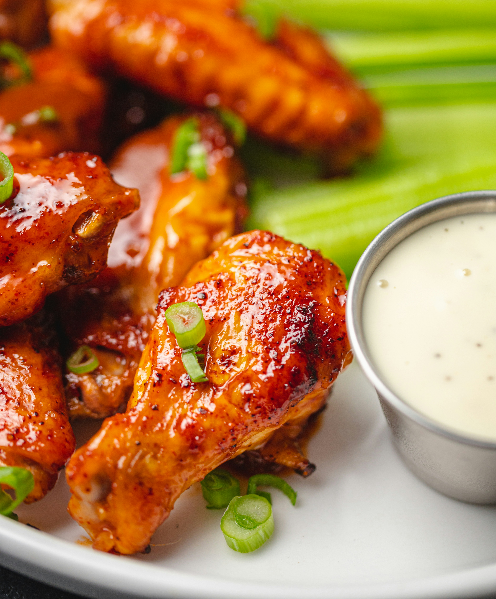

Buffalo Chicken Wings Recipe

Description
Buffalo wings are deep-fried, traditionally unbreaded, chicken wing sections (flats or drumettes) tossed in a tangy, spicy sauce made from cayenne pepper hot sauce and melted butter.
Ingredients
- 1/4 cup of all-purpose flour
- 1/8 teaspoon of ground paprika
- 1/8 teaspoon of cayenne pepper
- 1/8 teaspoon of salt
- 5 chicken wings
- 1 cup of vegetable oil for frying, or as needed
- 1/8 cup of butter
- 1/8 cup of hot sauce (traditionally frank's red hot)
- Pinch of ground black pepper
- Pinch of garlic powder
Preparation Steps
- Whisk together flour, paprika, cayenne pepper, and salt in a large bowl.
- Place chicken wings in the bowl with flour mixture and toss until evenly coated. Transfer wings to a 9x13-inch glass baking dish and arrange in a single layer. Cover and refrigerate for 1 to 1 1/2 hours.
- Add about 1 inch oil to a deep, heavy skillet; heat to 375 degrees F (190 degrees C). (The oil should be just enough to cover wings entirely.)
- Meanwhile, combine butter, hot sauce, pepper, and garlic powder in a separate small saucepan over low heat. Cook and stir until butter is melted and mixture is thoroughly blended. Remove from the heat and reserve for serving.
- Fry coated wings in the hot oil for 10 to 15 minutes, or until they begin to crisp and turn brown. Maintain the oil temperature while cooking. Remove cooked wings from hot oil and let drain on paper towels or a wire rack.
- Transfer wings to a platter and drizzle hot sauce over top; or mix wings and hot sauce in a bowl until coated.
Return to Homepage